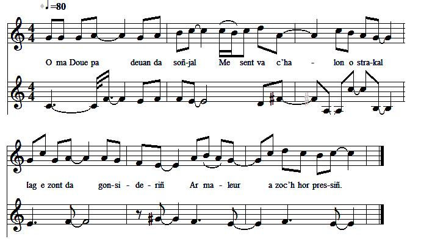
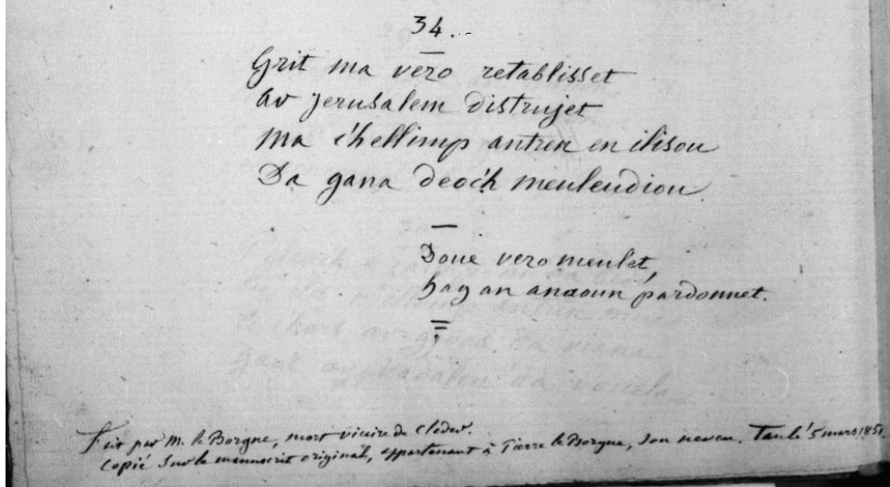

Ar veleien harluet
Les prêtres exilés - The priests in exile
Composé par M.Le Borgne, ancien vicaire de Cléder
|
A propos de la mélodie "War ton 'Komunion ar vugale'" Indication portée sur le manuscrit de Penguern. Ne sachant pas de quel chant il s'agit, je l'ai remplacé par le cantique: "A-vremañ beteg ar marv" trouvé sur le site de M. Quentel. A propos du texte Il est suivi d'une note: "Fait par M. Le Borgne, mort vicaire de Cléder. Copié sur le manuscrit original appartenant à Pierre Le Borgne, son neuveu. Taulé, 5 mars 1851." - trancrit par le Pr. Pierre Le Roux dans les " Annales de Bretagne [et des Pays de L’Ouest], 1886-[en cours]", pour les années 1908-1909, Tome 24, p. 76-89; - transcrit par Joseph Ollivier ( Ms 975, p. 288-293, chant n° 159) - publié par Dastum dans "Dastumad Penwern" en 1983, page 54-58. - M-00101 - Bretoned keizh, me ’m eus truez ouzhoc’h. et - M-00117 - Tostaït amañ, Plabennegiz , suivis de l'indication: "Compositions de M. Le Borgne contre la Révolution". Que l'Abbé Le Borgne ait aussi composé ces deux autres chants est seulement une hypothèse. |
 "Komunion ar Vugale" Arrangement par Christian Souchon (c) 2009  Folio 130 du MS 90 de Penguern: note de bas de page |
About the melody "War ton 'Komunion ar vugale'" Indication on the Penguern manuscript. Not knowing which song it was, I replaced it with the song: "A-vremañ beteg ar marv" found on Mr. Quentel's site. About the text "Made by M. Le Borgne, deceased vicar of Cléder . Copied from the original manuscript belonging to Pierre Le Borgne, his nephew. Taulé, March 5, 1851." - published by Prof. Pierre Le Roux in the "Annales de Bretagne [et des Pays de L’Ouest], 1886- [in progress]", for the years 1908-1909, Tome 24, p. 76-89; - transcribed by Joseph Ollivier (Ms 975, p. 288-293, song n ° 159) - published by Dastum in "Dastumad Penwern" in 1983, page 54-58. - M-00101 - Bretoned keizh, me ’m eus truez ouzhoc’h . and - M-00117 - Tostaït amañ, Plabennegiz , followed by the indication: "Compositions of M. Le Borgne against the Revolution" . That Abbé Le Borgne also composed these two other songs is only a hypothesis. |
|
AR VELEIEN HARLUET 1. O ma Doue pa deuan da soñjal Me sent va c’halon o strakal Hag e zont da gonsideriñ Ar maleur a zo oc’h hor pressiñ. 2. Me wel en em denn deus hor c’hreiz Ar gwir sklêrijen deus ar Feiz. Skuizh eo Doue oc’h hor gweled Pa na renoñsomp d’hor pec’hed. 3. Kaer en-neus don’t d’hor gervel Ne reomp seblant vit He c’hleved Hag hon skoyo a dra serten Meurbed terrup gant He walenn. 4. Brasañ maleur ac’h errufe Eo an ambandon a Zoue Dalc’homp mad eta d’hol lezenn Ha greomp timat gwir pinijenn. 5. En em adresomp d’ar Werchez Pini eo ar gwir advokadez D’ar bec’herien ambandonet Etre douar an chismatiked. 6. Doue a zeu en amser-mañ Euz He vinistred d’hor privañ. Bez hon-eus se sur meritet O vezañ outañ ken direspet. 7. Skuizh int pelloc’h o reded Er c’hoajoù noz-deiz heb kousked. Soufret o-deus naoñ ha rioù, An douar yen evit gweleoù. 8. Evel int ouzh ar gaouenn A guzh en deiz, en noz a bourmen. Preservitiñ int evel laboused Allas, er gwez a rank kuzhed. 9. Pell zo emaint e mizer Balamour deomp-ni va Salver. Hor punisit, O va Doue, Ha deomp pellait liberte. 10. Ne d’eo ket i o-deus meritet Bezañ er c’hiz-se chatiet Allas, ni a zo kriminal En dallentez meurbed fatal. 11. Soñjet o-deus evit o repoz En-em dennañ e Bro-Zaoz, Aliez o-deus bet klevet E-vije ar feiz dezo rentet. 12. Va daoulagad a skuilh daeloù. Va c’halon a bounto huanadoù. Plijit ennoc’h, va Doue, Ho-pezet truez oc’h hon ene! 13. Adieu, eta, hor beleien, Marteze n’ho gwelimp biken, Mervel a rankimp vel loened Heb sakramant, na sikour ebed! 14. Gwell eo ganeomp, sertenamant, 4ervel heb resev sakramant Evit na d’eo bezañ souilhet Dre zaouarn an heretiked. 15. Kriz vije ar galon na ouelje E-treizh an Aber, neb a vije, O weled ministred Jezuz Taolet war ar mor perilhuz. 16. Konduit al lestrig-se, va Doue, A likint-eñ e savetez Bezañ ez int Ho gwir diskibien Preservit i dre Ho moyen! 17. Adieu eta, gwir bastored Ni zo eta ambandounet Etre grifoù bleizi mechant, Privet a beb soulajamant. 18. Ma vijen eno war garreg Doue en-divije va eksaoset Krijal a rajen sertanamant Ma savje an enklev d’ar firmamant. 19. Ya, va Doue, ni Hoc’h heulio Ha war Ho lerc’h ni a grio Importun evel ar Gananeen Ken a reot deomp hor beleien. 20. Ar veleien ivez d’o zro A ziskouez o glac’har c’hwerv Merket eo war o bizajoù E skuilhont kalz eus a zaeloù. 21. Adieu, pobl keizh euz-a Leon Kuitaad a rankomp hor c’hanton. Adieu, kerent ha mignoned! Adieu d’hor gwir penitanted! 22. Lezet am-eus ganeoc’h armoù Evit souten hoc’h eneoù: Diwallit mat eta, pobl keizh, Ha dalc’hit mat, atav, d’ar feiz. 23. O va Doue, pebez arret Hor beleien a rank tec’hed. Ni n’on-eus mui d’hor souten Nemed Ho kras, va Salver, hepken! 24. Ar kaleter euz va c’halon An disprizañs euz ar grasoù Deus Doue kement outrajet Ma z’eo ouzhomp en em fachet. 25. Pardon, va Doue, va Jezuz! Bezit ouzhomp trugarezus! C’hwi a zo deomp-ni un tad mad En Hoc’h andret. Ni zo ingrat. 26. O, ministred eus hon Doue, Pedit evidomp noz ha deiz, Ma teuimp d’en ur damañtiñ O tec’hed diouzh an herezi. 27. O Gwerc’hez Vari an Itron, Sellit ouzh hon desolasion! Sellit a-druez ouzh ar Frañs Ha roit deomp Hoc’h asistañs! 28. Na bremañ, petra da ober? Ni n’hon-eus mui ar pouer D’ober en publik pedennoù Pe brest ez-aimp d’ar prizonioù. 29. Dekretet eo gant an Nasion Eo kriminal an devosion: E kuzh evel ar gaouenn E rankomp ober hor pedenn. 30. Pelec’h ez-aimp ni da bediñ? En iliz n’hellomp antren mui. E-harz ar Groaz da vihana Gant ar Vadalen da ouelañ. 31. Evel ar benitanted gwechall E-harz an dorioù o krial Hep galloud en iliz antren Nemed goude gwir binijenn. 32. Bremañ ez-omp ivez kondaonet Da ouelañ dourek d’hor pec’hed. Biken n’antreomp en ilizoù Ma na renoñsompd’hor c’hrimoù. 33. Pegehid, va Doue, a amzer E tilesot-hu ar pec’her? Dizec’hañ a reomp vel ar foen Ma na zeuit pelloc’h d’hor souten. 34. Grit, ma vezo retabliset Ar Jeruzalem distrujet! Ma c’hellimp antren en ilizoù Da ganañ deoc’h meuleudioù. 35. Doue vezo meulet Hag an anaon pardounet! Transcription KLT: Chr.Souchon (c) 2009 |
LES PRETRES EXILES 1. Je sens, mon Dieu, dans ma détresse, Mon cœur bien près de se briser, Lorsqu’il vient à considérer Le grand malheur qui nous oppresse. 2. Et je vois de nous s’éloigner La vraie lumière de la Foi. Dieu se lasse lorsqu’il nous voit Persévérer dans le péché. 3. Il a beau nous dresser la table Nous faignons de n’écouter point Il nous frappera, c’est certain, De Sa férule redoutable. 4. La plus grande des déchéances, Qui nous frappe est Son abandon. Fidèles à Sa loi, hâtons- Nous donc de faire pénitence. 5. Vierge, notre recours unique: Intercèdez auprès de Lui! Nous sommes livrés aux impies Dans une nation schismatique. 6. Dieu nous impose désormais D’être privés de Ses ministres. Un tel châtiment se mérite. Il sanctionne notre irrespect. 7. C’est qu’ils sont las de fuir, farouches, Ces prêtres, parmi les broussailles, Eux que le froid, la faim tenaillent, Eux à qui le sol sert de couche; 8. Et de ressembler à la chouette, Terrés le jour, errant la nuit, Quand ils ne doivent pas aussi Faire des arbres leur cachette. 9. S’ils sont à ce point accablés, C’est que nous Te sommes odieux. C’est nous qu’il faut punir, mon Dieu, En nous privant de liberté. 10. Car ce n’est pas eux qui méritent De subir un tel châtiment. Hélas, c’est nous les délinquants, Nous, dont l’aveuglement T’irrite. 11. Nos prêtres n’ont eu d’autre choix Que de se sauver Outre-Manche, Vers ce pays de tolérance Où chacun, dit-on, vit sa foi. 12. Vois, nos yeux débordent de larmes. Entends nos soupirs attristés! Nous T’en prions, Dieu de bonté, Prends pitié de nos pauvres âmes! 13. Adieu donc, nos prêtres d’antan. Qui sait si nous vous reverrons? Comme des bêtes, nous mourrons Sans le secours des sacrements. 14. Nous préférons assurément Sans les sacrements décéder, Plutôt que de les voir souiller Par le contact des mécréants. 15. Quel cœur sans pleurer aurait pu, Sur les deux rives de l’Aber, Voir fuir, au péril de la mer, Ces ministres du Christ Jésus? 16. Mon Dieu, dirige cet esquif! Veuille le conduire à bon port! Tes vrais disciples à son bord Méritent Tes soins attentifs. 17. Vrais pasteurs, adieu maintenant! A l’abandon résignons-nous, Entre les griffes de ces loups, Privés de tout soulagement! 18. Si j’avais heurté quelque écueil, Mon Dieu,tu m’aurais exaucé. Les cris qu’alors j’aurais poussés Aurait même ébranlé Ton seuil. 19. Nous Te poursuivrons, O Jésus, De nos cris perçants importuns, Tout comme les Cananéens, Jusqu’à ce qu’ils nous soient rendus, 20. Ces prètres, lesquels à leur tour Montrent le chagrin qui les ronge; Et sur leurs visages s’allongent Les rides creusées par leurs pleurs. 21. "Adieu donc, peuple de Léon, Adieu donc, amis et parents. Adieu sincères pénitents. Il nous faut quitter ce canton. 22. Entre vos mains il est une arme Dont il faudra prendre grand soin: C’est la Foi, conservez-la bien! C’est là le soutien de vos âmes. » 23. Dieu, quel arrêt as-Tu rendu! Obliger nos prêtres à fuir! Nous n’avons pour nous soutenir Que Ta grâce, Seigneur Jésus. 24. L’endurcissement de nos cœurs, Le peu de cas que nous faisons De Ta grâce ont, avec raison, Sur nous attiré ta rancœur. 25.Dieu, ne nous abandonne pas! Envers nous sois compatissant! Et sois pour nous le père aimant Qui pardonne à son fils ingrat! 26. O ministres de notre Dieu, Priez pour nous, priez toujours Pour que nous échappions un jour Aux griffes de ce schisme odieux! 27. Vierge Marie, voyez la France Plongée dans la désolation! Faites preuve de compassion, Accordez-lui votre assistance! 28. Maintenant que ferons-nous donc? Désormais nous sont interdites Les manifestations publiques De foi, sous peine de prison. 29. C’est un décrêt de la Nation: Il faut pratiquer en cachette Ou bien la nuit, tels des chouettes, La prière et la dévotion. 30. Où, pour prier, irions-nous donc? Portes closes, l’église même, Ne permet qu’avec Madeleine Au pied de la Croix nous pleurions. 31. Quand les pénitents d’autrefois Criaient qu’on leur ouvre les portes, Et qu'on les traitait de la sorte, S’ils se repentaient, on ouvrait. 32. Nous sommes aussi condamnés A verser des larmes amères Et pour que l’étau se desserre Il faut renoncer au péché. 33. Combien de temps encor mon Dieu Délaisseras-Tu les pécheurs? Nous dépérissons d’heure en heure Quand Tu restes sourd à nos vœux. 34. Que soit relevée de la fange La Jérusalem dévastée. Des églises rends-nous l’accès, Que nous y chantions Tes louanges! 35. Que Tes louanges nous chantions, Qu’aux âmes Tu fasses pardon. Trad. Christian Souchon (c) 2009 |
PRIESTS IN EXILE 1. O hark Lord, my heart is so sore It can't without complaint any more See all the hardships we endure, How it all will end is not sure. 2. I see how withdraws from our midst The true enlightment of the Faith. God is now weary of our sin We wallow complacently in. The long lament's morale is that the religious persecution is God's deserved punishment for the overall prevailing impiety! |

Retour à "Au prètre exilé" du "Barzhaz Breizh"
Taolenn